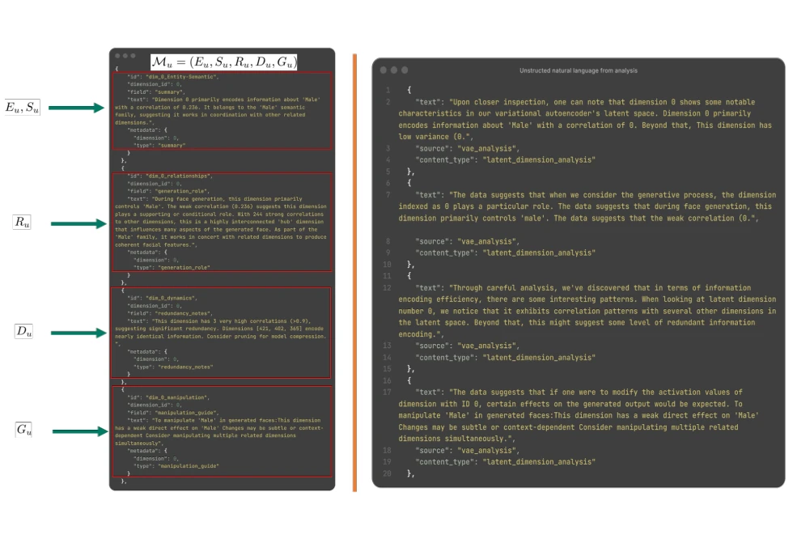
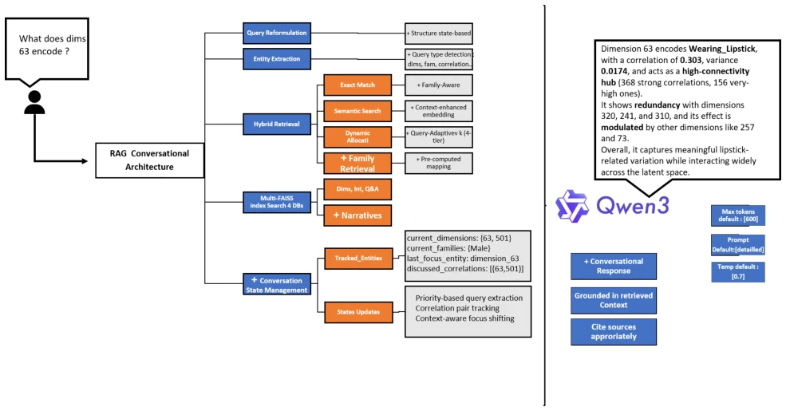
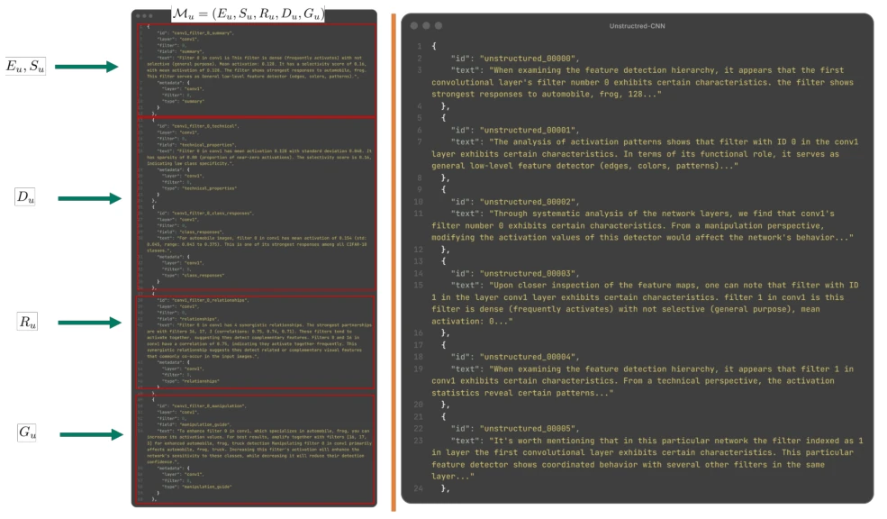
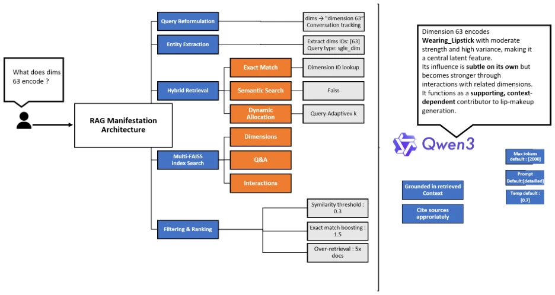
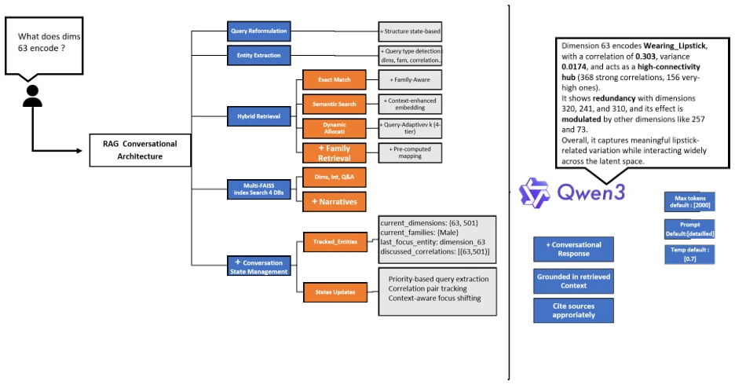
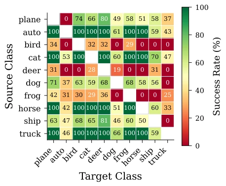
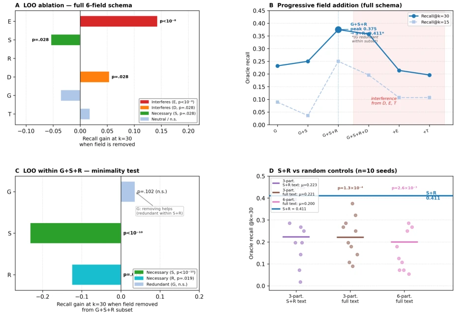
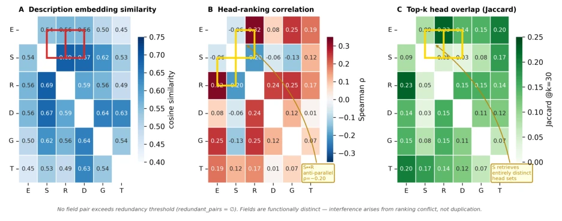

Figure 1. Overview of MANIFESTATION. The pipeline extracts Manifestation Units (E, S, R, D, G, T) encoding entity identity (E), semantic associations (S), cross-component relationships (R), quantified dynamics (D), manipulation guidance (G), and (for transformers) attention-head primitives (T). Hybrid retrieval combines exact matching on E with semantic search over the remaining fields; the SLM generates responses grounded in retrieved statistics from D.

Figure 6. Comparison of structured Manifestation Unit representation (left) versus unstructured natural language (right) for the same dimension. The structured format (E, S, R, D, G) provides typed fields enabling exact-match retrieval on entity identifiers and faithful numeric grounding. The unstructured format buries the same information in prose, causing retrieval failures on entity-specific queries (e.g., “dimension 0” appears throughout the text but cannot be reliably matched).

Figure 7. RAG conversational architecture for the VAE system Conversational System. A user query (“What does dimension 63 encode?”) flows through: (1) query reformulation with state-based context tracking, (2) entity extraction detecting query type (dimension, family, correlation), (3) hybrid retrieval combining exact match, semantic search, and family-aware retrieval across four FAISS indices, (4) conversation state management tracking entities and focus, and (5) grounded response generation via Qwen3-8B. The output cites specific statistics from retrieved Manifestation Units (correlation ρ = 0.303, variance 0.0174, relationship counts).

Figure 8. Comparison of structured Manifestation Units (left) versus unstructured baseline (right) for CNN filter analysis. The structured representation decomposes knowledge into five specialized document types (Eu, Su, Ru, Du, Gu), enabling field-specific retrieval. The unstructured baseline concatenates all information into narrative paragraphs, losing explicit structure.

Figure 9. VAE single-turn RAG architecture. The system processes queries through reformulation and entity extraction, then applies hybrid retrieval (exact match, semantic search, dynamic allocation) across multiple FAISS indices before filtering and ranking results for generation.

Figure 10. VAE conversational RAG architecture. Extends the single-turn system with family retrieval, a narratives database, and conversation state management for multi-turn context tracking.
Figure 2. Necessity-direction validation. (a) Primary filters are necessary (larger drop); (b) necessity increases with k.

Figure 3. Per-pair success rate, averaged across the full am- plification sweep α ∈{10, . . . , 100} (vs. Table 2’s protocol {30, 50, 70} for the H2 headline). Failures cluster within-category, tracing filter-selectivity overlap. Full breakdown: App. E.

Figure 4. Per-field ablation on the GPT-2 ESRDGT schema identifies S+R as the minimal-optimal core. (A) Leave-one-out on the full six-field schema: E (p < 10−8) and D (p=.028) actively interfere when present; S (p=.028) is necessary; R, G, T non-significant individually. (B) Progressive field addition: recall@30 reaches 0.375 at G+S+R, drops in the interference zone when D, E, or T are added to that subset, and is highest at S+R alone (0.411). (C) Leave-one-out within the G+S+R subset: S (p < 10−10) and R (p=.019) are both necessary; G is redundant within the subset. (D) S+R versus random partitions of the same per-component text: S+R recall@30 = 0.411 beats three random-partition baselines (µ ∈[0.20, 0.22]) at p < 0.01 across 10 seeds, isolating the structural contribution from content.

Figure 5. Field redundancy analysis on the GPT-2 ESRDGT schema. (A) Pairwise embedding cosine similarity. (B) Head-ranking Spearman correlation: S and R show the strongest negative correlation (ρ = −0.20), indicating weakly anti-correlated head rankings. (C) Top-k head-set Jaccard overlap. No field pair exceeds redundancy thresholds, confirming functional distinctness. The S ↔R weak anti-correlation explains their complementarity, as they retrieve largely-disjoint head sets and jointly cover a larger functional space.